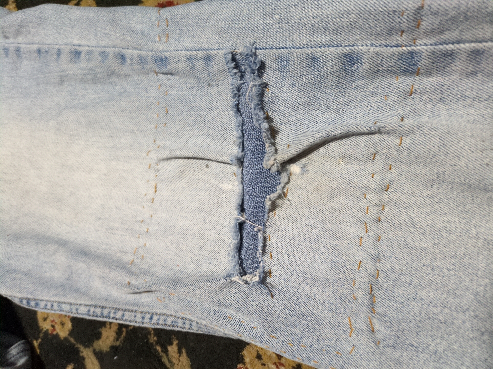
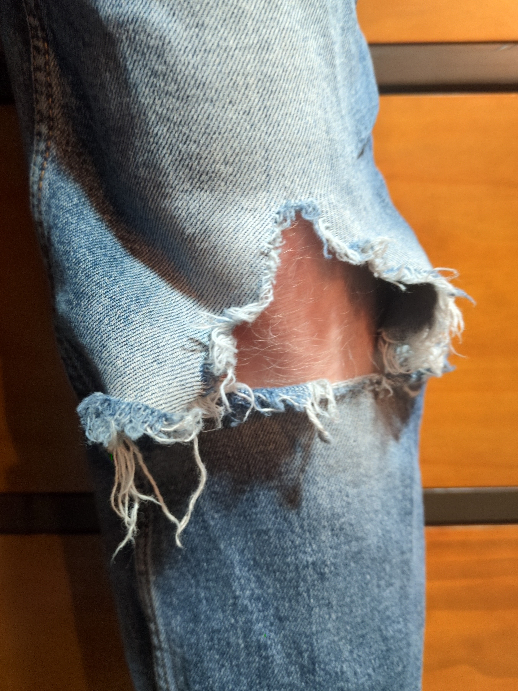
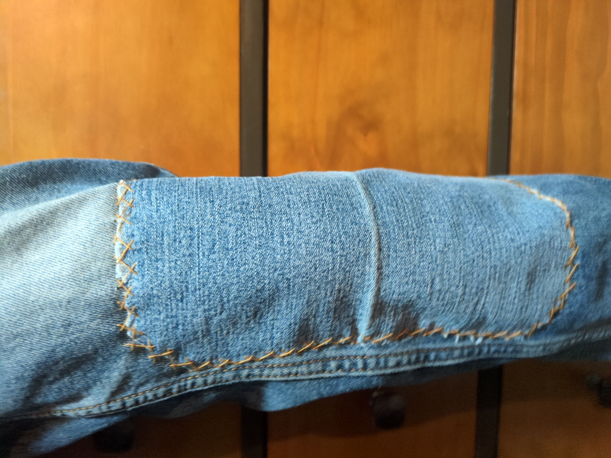

Written 2026-08-19
I wear jeans a lot. This comes with the consequence that, while durable, denim wears down over time. In my case, that means three pairs of jeans each with a hole in the left knee. There seems to be a pattern here that needs some addressing. Two of those three pairs have gotten pretty bad recently, nearing the point of unwearable in public. I certainly wasn't going to toss three otherwise good pairs of jeans, so I decided to learn how to mend them.
I picked up a pack of needles and denim thread at Michael's. If I was more patient, I bet I could have scavenged these from family or friends. The hardest part for me was finding scrap denim. I didn't want to buy and cut up perfectly good jeans, so I instead went to a local thrift shop and asked if they had any jeans unfit to sell. They had a bin in the back that they were going to donate, so I walked away with a pair of scrappy jeans for the grand total of $1.
Prior to this endeavour, I had zero knowledge about mending or sewing. Thankfully, at least in my very simple case, it really isn't that hard! I followed this tutorial from Laura at The Cozy Cuttlefish and she did a great job explaining the technical details. The process takes time, but I found it is a great background activity for talking on the phone or listening to music. A few times, I accidentally sewed the front of the leg to the back and didn't realize until later. Not to worry, it was pretty easy to cut the stitch, tie it off on both ends, and add a new stitch over the same area. I found that a pair of soldering tweezers helps tremendously with tying very small knots.
It took a little time for me to figure details out. Some of the stitches look a little funky, but I think that adds to the character. They've held up to everyday use so far and they're a lot more sightly now.



Patching of course has been around for centuries and was the at-home solution to fixing worn out clothes. Nowadays, the general consensus seems to be tossing old clothes and ordering two new articles of clothing for every one thrown out. This is not only directly wasteful of material, but also wastes the fresh water used to grow fibers and the labor of manufacturing. By learning to mend, I'm increasing my sustainably in one small yet impactful way. It's hard to put into words, but I also feel more connected to humanity by learning this skill practiced by so many before me. This has been a really fun project, and it feels great to get more use out of my clothes that I would have otherwise.
To the reader that might be inspired yet lack experience, go give mending a shot!
{kind=link}
{kind=link}